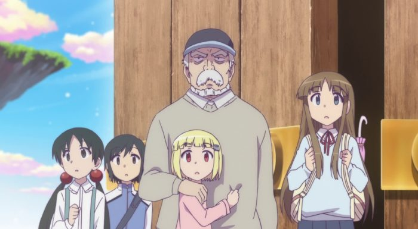

While it unfortunately didn't seem to have a lasting impact for fans to talk about it in the years to follow (and hey, by 2017, online streaming and the amount of anime being produced created an atmosphere where virtually every show is forgotten within a month of it finishing), I remember "Alice and Zoroku" being one of the more interesting anime of its year. It was the poster-child for a short-lived trend, where instead of featuring yet another group of sailor-suit-uniform high school kids as the lead characters, an unassuming elderly man is the lead instead. In a premise that's been done before ("Elfen Lied" comes to mind), "Alice and Zoroku" is about children with supernatural powers being studied and experimented in a lab, and the adventures of one girl, Sana, trying to escape and have a normal life among human society. Sana is one of several people who are "Dreams of Alice," people with powers that range from few to many, definied and categorized as "cards." The powers might allow teleportation, flight, controlling objects or people with your mind, and so on. Potentially dangerous, and potentially of great interest to certain governments, the children with these powers are subject to the whims of multiple organizations, some who wish to study and profit off of them, and some with their well-being in mind. When Sana successfully escapes in the first few minutes of the double-length intro episode, being a particularly powerful "Alice" with unknown origin, everyone is after her.So does the little girl Sana meet a kind and brave teenager boy to live with? Maybe one who treats her as a younger sister? Or like an alien girlfriend? Nope. Instead, Sana meets the grumpy crumudgeon Zoroku, who despite mysterious dealings with the local yakuza, is just an ordinary hardworking florist, running his own flower shop. He has no time for Sana's frilly cosplay-style pink dress, or her explainations of magic and evil laboratories. Even a hectic car chase with spwaning objects that threaten to crush them doesn't change his mind. But being kind natured at heart, he sees this is a girl in trouble, and agrees to take her in as an adopted child, to live with his existing teenage granddaughter. While government agents keep an eye on them as their bodyguards, they try to live peacefully, with Sana slowly learning about normal human lifestyles that she never had the chance to experience. And with a strict hand, maybe Zoroku will teach the whippersnapper some manners too. It's a good premise, allowing for some thrilling action and funny slice-of-life moments of the cute little Sana learning basic social skills. While it isn't explained in great detail, we do get a sense of Sana's mysterious origins and whether she's truly human or not. I thought here relationship with Zoroku would fill out most of the series, as well as the never-ending fight to protect her from powers-that-be. Surprisingly, the first arc (roughly half of the 12 episodes) ends the multi-group conflict with little fanfare, and the rest is largely slice-of-life sweetness, aside from a final arc where a new girl suddenly acquires similar powers and doesn't know how to safely deal with them. Zoroku's stern glare is typically involved by the end, but isn't as present as I expected.But while expectations were not exactly met, they were also surpassed in other ways. The show has much stronger writing than I expected, largely from the background history of the different characters that have these incredible powers and their motivations. It's dramatic, and sometimes violent, but really engrossing. The core theme always seems to be about the importance of nurturing, especially for young children, whether it's to take them away from cold scientific labratories in the arms of a family, or the adverse effect arguing parents with high expectations for their child can have.  Sprinkled with Sana being cute, the show might not be as overwhelmingly adorable as it thinkgs it is, relative to some other anime. Those scenes, fun though they may be, interrupt the exciting urgency that the show had early on. And while it provides a satisfying final scene to end on, I could tell that this was based on a manga series, and perhaps only a few of its stories were adapted (as of 2020, the manga is apparently still ongoing). If I had to be a stickler, I'd say editing down and more careful choices of what stories to adapt would have made "Alice and Zoroku" an excellent show. Instead, we merely have a "very good" one... which is still pretty good. I'm of mixed feelings regarding the production values of the anime. J.C. Staff uses 3D animation to great effect in some of the action scenes in the first episode and later in the first arc, but there's little opportunity for any of that later. Instead, we get mostly talking heads for most of the show, which is noticably economical. Character designs large eyes with tiny pupils, and mouths that tend to be a little close to the chin, resulting in a unique but not completely unusual style, but also one that might look off. With the special powers and dreamlike "Wonderland" world that ultimately gets used, you'd think there'd be opportunity for great imagination and color, but I wasn't particularly impressed with that. The show looks better than the average anime, but not in a manner that would impress many.Funimation's English dub is quite good, although it relies on the script's overuse of some phrases (characters in-show joke about how Zoroku constantly says "I hate crooked stuff" and Sana learns the word "frazzled" later on and uses it several times an episode as her one way of describing her feelings). It's also difficult to act characters that are primarily meant to be cute; it's stength comes primarily from the moments of brilliant drama in certain scenes. One minor issue is one of two children in the final arc: it isn't clear if it was a boy or a girl, and whether they were just a friend or more to the other girl, and the dub translation's inconsistency made it even more confusing. The music is pleasent and fits the tone when it needs to, be it dramatic and tense, or cheery and mellow. Despite being one of the better shows of 2017, "Alice and Zoroku" doesn't get talked much about now, and I suspect sales weren't as high as hoped. It's a special little show that uses a few uncomfortable moments and topics in a way that feels rewarding when they're resolved. Flaws aside, it's easy to recommend. (PS: Sana's power makes her tire out and constantly hungry, and the show has multiple product-placements to real food brands. I couldn't stop laughing when she was handed a detailed Snickers candy bar, and took several moments to begin eating it, always in the camera frame. It's a shame that never caught on as a meme.)
- "Ani" More reviews can be found at : https://2danicritic.github.io/ Previous review: review_Akira Next review: review_Alien_Nine